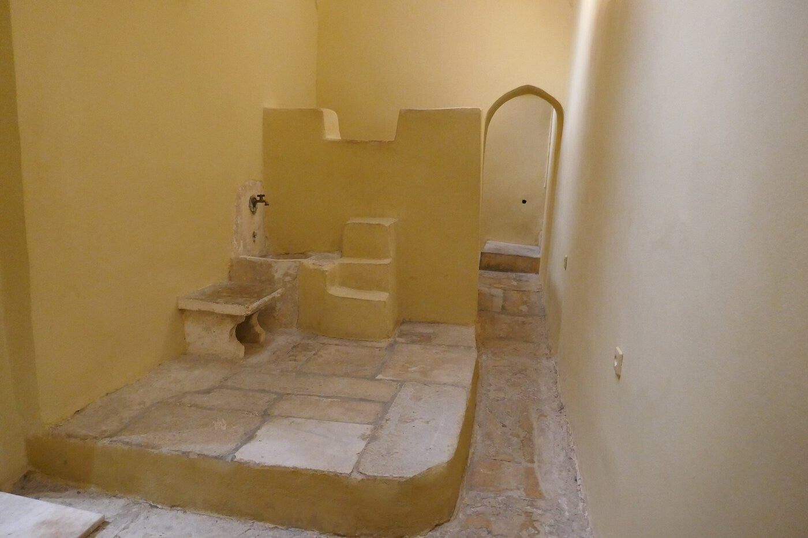

Ottomaans badhuis uit ± 1650 in het centrum – ooit ontmoetingsplek voor vrouwen, later zoutmagazijn. Nu te bezoeken.
Yahudi Hamamı
Het Turks badhuis (Hamam) staat pal in het centrum van Kos-stad. Het stamt uit de Ottomaanse tijd en werd gebouwd rond 1650.
Het heet Yahudi Hamamı (Joods badhuis) omdat het vooral gebruikt werd door de Joodse vrouwen uit de lokale gemeenschap, die al eeuwen op het eiland woonden.
Openingstijden
Toegang gratis.
Sociale ontmoetingsplek
In die tijd had Kos een bloeiende Joodse bevolking. Het badhuis was speciaal voor vrouwen: hier kwamen ze samen om te baden, te kletsen en het nieuws van de dag te bespreken.
Met een ronde ruimte en negen baden was het een echte ontmoetingsplek – een soort sociale hub van vroeger.
1933, Italianen en zoutmagazijn
Het gebouw werd in 1933 tijdens de grote aardbeving zwaar beschadigd en tijdens de Italiaanse overheersing weer hersteld. Het bleef in gebruik tot 1948.
Daarna werd het een opslag voor zout uit de zoutpannen van Kos – vandaar de bijnaam “zoutmagazijn” (alatapothíki).
Ottomaans erfgoed
Een van de weinige overgebleven gebouwen uit de Ottomaanse tijd. De Italianen beschouwden het als Turks en oosters; zij zagen zichzelf als erfgenamen van het Romeinse Rijk en vervingen of restaureerden veel bestaande gebouwen in Italiaanse stijl.

BinnenBezoeken
In het centrum van Kos-stad. Gratis, dinsdag gesloten.
Tip: let op de ronde vorm en de koepel – typisch voor een Ottomaans hamam. Neem even de tijd om de sfeer van vroeger te voelen.